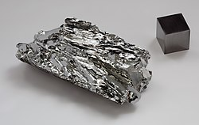

Название, символ, номер Молибде́н / Molybdaenum (Mo), 42
Атомная масса
(молярная масса) 95,96(2) а. е. м. (г/моль)
Электронная конфигурация [Kr] 4d5 5s1
Радиус атома 139 пм
Химические свойства
Ковалентный радиус 130 пм
Радиус иона (+6e) 62 (+4e) 70 пм
Электроотрицательность 2,16 (шкала Полинга)
Электродный потенциал −0,2
Степени окисления 6, 5, 4, 3, 2
Энергия ионизации
(первый электрон) 684,8 (7,10) кДж/моль (эВ)
Термодинамические свойства простого вещества
Плотность (при н. у.) 10,22 г/см³
Температура плавления 2623 °C
Температура кипения 4885 K
Уд. теплота плавления 28 кДж/моль
Уд. теплота испарения ~590 кДж/моль
Молярная теплоёмкость 23,93 Дж/(K·моль)
Молярный объём 9,4 см³/моль
Кристаллическая решётка простого вещества
Структура решётки кубическая объёмноцентрированая
Параметры решётки 3,147 Å
Температура Дебая 450 K
Прочие характеристики
Теплопроводность (300 K) 138 Вт/(м·К)